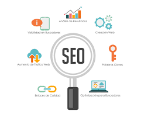

Posicionamiento Web
Posicionamiento web también es conocido como El SEO o posicionamiento SEO, El posicionamiento SEO (por sus siglas en inglés Search Engine Optimization) son un conjunto de técnicas que se aplican en una página web con el objetivo de mejorar su posición y su visibilidad en las páginas de resultados de los principales navegadores. En otras palabras, podemos definir el SEO como un proceso enfocado a situar una determinada página web en las primeras posiciones de los resultados de búsqueda ante una consulta específica de un usuario.
Posicionamiento web: SEO on-page y SEO off-page
SEO on-page
El SEO on-page hace referencia al conjunto de técnicas que se aplican en la propia página web que queremos posicionar. Por ejemplo, algunos factores a la hora de optimizar el SEO on-page de una web son:
- Mejora de la velocidad y optimización de tu web
- Optimización de imágenes
- El Sitemap.xml
- Creación de contenido de calidad
- Buena experiencia de usuario web
- Buena estructura de las etiquetas HTML (H1, H2, H3…)
SEO off-page
En este caso podemos definir el SEO off-page como el conjunto de técnicas que llevamos a cabo fuera de nuestra web pero que también ayudan a mejorar la posición de tu página en buscadores. Por ejemplo, algunas de estas técnicas son:
- Uso de redes sociales
- Estrategias de Link Building
- Guest blogging
- Registro en directorios (Ej: Google My Business)